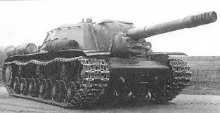
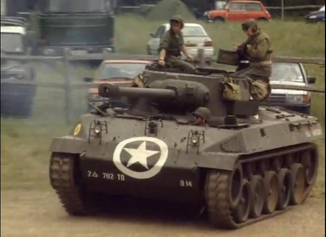
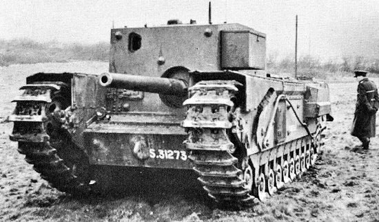

САУ
Германії, СССР, Великобританії та США,
часів другої світової війни8,8cm Flack 37 Selbstfahrlafette auf 18 ton Zugkraftwagen

8,8 cm Flak 18 (Sfl.) auf Zugkraftwagen 12t (Sd.Kfz. 8) , також відомa як Bunkerflak або Bufla , — напівгусенична самохідна гармата німецького Вермахту , розроблена до Другої світової війни та використовувалася в першій половини війни.
Вона використовувалася під час вторгнення до Польщі, але найбільш відома своїм використанням під час битви за Францію , де вона була єдиною німецькою самохідною гарматою, здатною знищити більш важкі танки союзників, такі як французький Char B1 і британський Matilda II .
Решта техніки використовувалися на Східному фронті . Остання Bufla була знищена в 1943 році.СУ-152
СУ-152 — важка радянська самохідно-артилерійська установка (САУ) часів Німецько-радянської війни, побудована на базі важкого танка КВ-1с і озброєна потужною 152-мм гаубицею-гарматою МЛ-20С.
За своїм бойовим призначенням СУ-152 не була як важким винищувачем танків, так і не була штурмовою гарматою; обмежено могла виконувати функції самохідної гаубиці. Будівництво першого прототипу СУ-152 під назвою Об'єкт 236 (також КВ-14 або СУ-14) було закінчене на Челябінському Кіровському заводі (ЧКЗ) 24 січня 1943 року, з наступного місяця почався серійний її випуск.
У зв'язку із зняттям з виробництва танка-бази КВ-1с СУ-152 у грудні 1943 року були замінені у виробництві рівноцінної по озброєнню і краще броньованої ІСУ-152, всього була побудована 671 самохідно-артилерійська установка цього типу.
M18 Gun Motor Carriage
- M18 Hellcat , 76-мм самохідна гармата M18 , « Хеллкет» ( англ. 76 mm Gun Motor Carriage M18, Hellcat ) — самохідна артилерійська установка (згідно з офіційною американською класифікацією — « винищувач танків ») США часів Другої світової війни зменшеним броньовим захистом, але високою рухливістю.
Gun Carrier, 3-inch, mk I, Churchill (A22D)
У 1941 році Генеральний штаб вимагав провести розслідування щодо можливості встановлення на танки високошвидкісних гармат.
«Валентайн» або «Черчілль» не підходили для встановлення в башті чогось більшого, ніж 6-фунтова (57 мм/2,24 дюйма) або 75-мм (2,95 дюйма) гармата. Тому гармату було вирішено встановити в надбудові з обмеженим ходом.
Те, що вийшло з цього, був Churchill Gun Carrier. Під офіційною довгостроковою назвою Gun Carrier, 3-inch, Mk.I, Churchill (A.22D), ця машина була першою і єдиною переробкою шасі Churchill на штурмову гармату/винищувач танків.